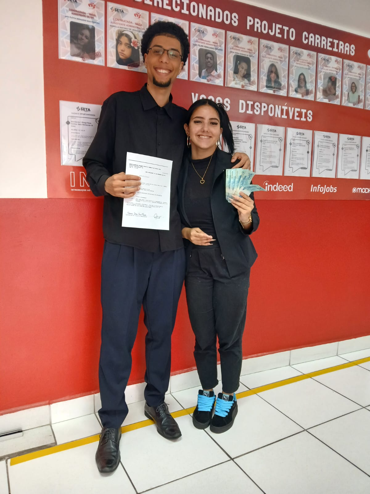
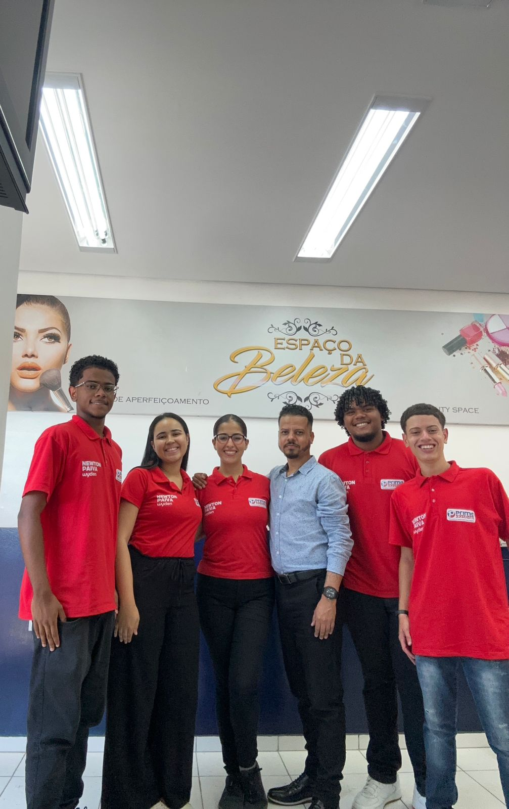
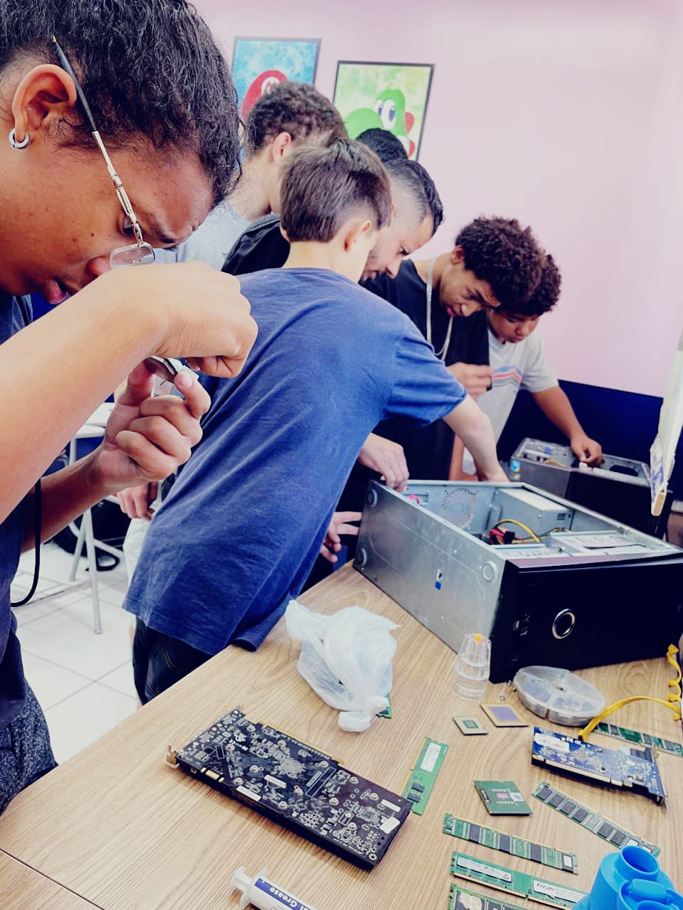
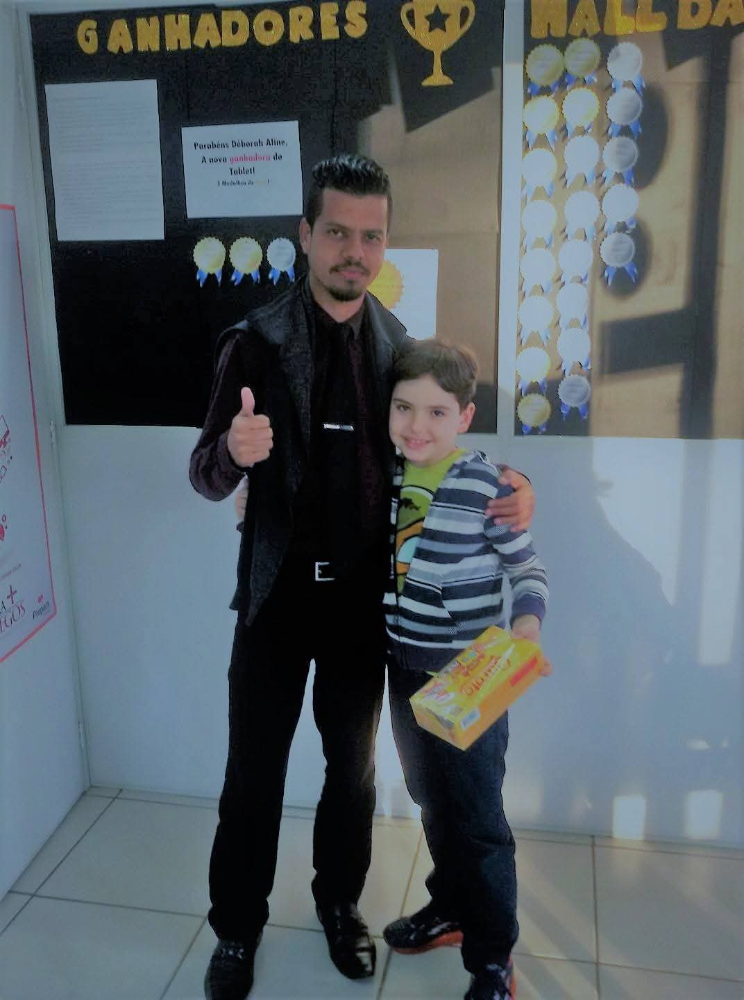

Resultados Reais
O que acontece quando a Fidelização Inteligente® passa a fazer parte da
O que acontece quando a Fidelização Inteligente® passa a fazer parte da
cultura da escola.
Alunos permanecem por mais tempo
Crie estratégias e vínculos reais para aumentar a retenção de forma duradoura.

Equipes trabalham como uma só
Comercial, secretaria e pedagógico atuam de forma integrada.

A experiência do aluno se transforma
Cada contato fortalece confiança, pertencimento e satisfação.

Todos sabem exatamente como agir
Processos claros geram segurança e qualidade no atendimento.

Setores deixam de competir
A escola passa a funcionar como um único ecossistema.
Cultura de pertencimento
Alunos e colaboradores sentem orgulho de fazer parte da instituição.
